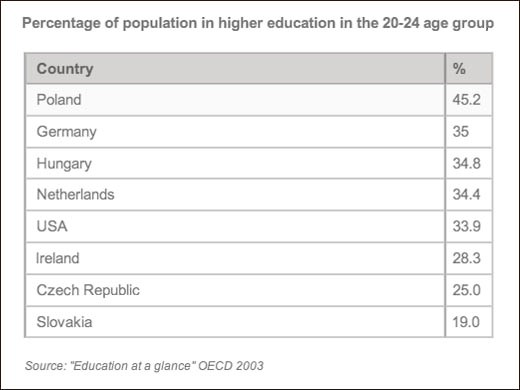
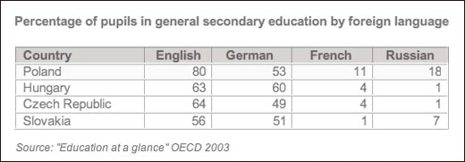
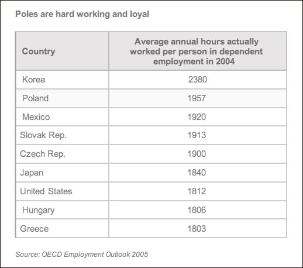

by Amando Viteri, Neubloc CEO
Jones Lang LaSalle, a famous professional services and investment management company specializing in real estate, recently reported that Poland is “the leading outsourcing destination in Europe.”1 Why is this? Because software development outsourcing to Poland offers several benefits:
1. Human capital: hardworking, highly educated and loyal employees
2. Low attrition: drastically lower than India and China
3. IP protection: on par with Western norms
4. Infrastructure: massive investment from the EU is boosting modern infrastructure
5. Cost: effective productivity competitive with India and China
Poland’s economy has grown for 21 straight years and has continued to grow exponentially since foreign companies set sights on it less than a decade ago1. Neubloc, which has a strong base in Poland, can attest to Poland’s efficiency first hand.
Poland is a great choice for investors because of the high quality of the labor force. It has the largest and youngest working population in Central Europe. International corporations are increasingly interested in establishing R&D in Poland as well.
There are 20 ICT academic centers with more than 2500 students each and 150,000 IT, computer science, and telecommunication students. Over 300 Polish IT engineers are employed in Silicon Valley.
44% of Polish society can communicate in English and at least 33% speak two foreign languages, a great asset in today’s globalizing economy.
Like their Korean counterparts, Poles are extremely hard working people. The OCED Employment Outlook 2005 notes that on average the Polish worked 600 more hours than the French and Germans in 2004.
Polish engineers value job stability and as a result provide a stable work force. For example, a group in Katowice Poland achieved zero attrition amongst their 58 engineers in three years. While this is common in Poland, it is unheard of in other countries.
IP laws in Poland are similar to those in the US, which is significantly safer than the intellectual theft risks present for companies that have outsourced to China and India. An article in CIO Magazine revealed how intellectual theft on software like SolidWorks is bargained for as much as $200,000 in countries like India. The undercover agent who played the role of the bargainer in one such case notes, “With no case precedents, the reality is we have no idea how this plays out under their law.” She says, stolen intellectual property “is a genie that can’t be put back in the bottle.” Therefore, outsourcing to a country like Poland that respects intellectual property is far easier and less expensive in the long run for companies.
Eastern Europe has advanced infrastructure like the US, unlike India. Poland has reliable power generators and a modern transportation network, for the same maintenance costs required in India. In developing countries, reliable power sources as well as fast, easy transportation are constant issues. In contrast, as Poland further integrates with the EU, rapid improvements to the infrastructure are being made.
The development costs in Eastern Europe are equivalent to those in India today. When a company chooses to outsource, it ultimately wants to maximize profits for the least expenditure all the while protecting its “crown jewels”. Outsourcing to countries like China and India carries significant risk, which can lead to higher costs. However, European countries like Poland provide a better risk to benefit ratio, all while delivering successful projects due to the quality, size and stability of the Polish software development workforce.
1. Gerra, Vanessa. "POLAND EMERGING AS MAJOR EUROPEAN OUTSOURCING HUB." . The Big Story, 27 02 2013. Web. 19 Dec 2013.